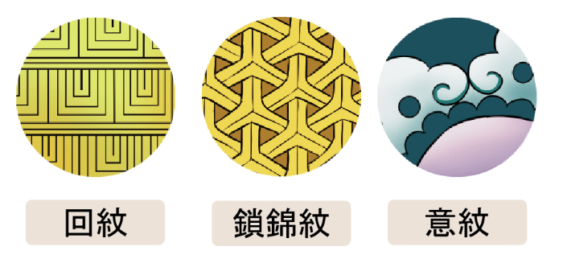
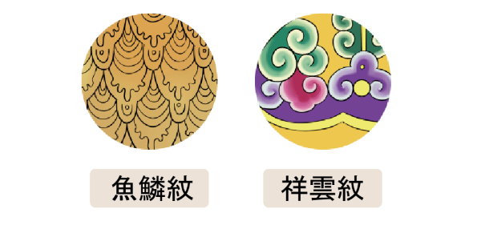

門神畫起來都差不多嗎？

有很大的不同呢！
每位門神的背景故事和形象會影響繪製時臉部表情、服裝，或是手持物的差別。
而且，從最一開始位序的配置就有大小比例的不同！
門神畫起來都差不多嗎？
有很大的不同呢！
每位門神的背景故事和形象會影響繪製時臉部表情、服裝，或是手持物的差別。
而且，從最一開始位序的配置就有大小比例的不同！
左右配置：以建築開口門扉為單位的門神彩繪，左右尤為由內而外看出去為基準，以傳統分金中線（中軸線）為大，門神彩繪的人物與祥瑞神獸題材的安排依序配置。
一般的作法是先取中線，預留天地後再進行構圖。
因為各寺廟的門板大小不同，繪師需要各自發揮，在各別尺寸的門板繪製門神。門神的構圖也會產生不同的視覺效果， 由於寺廟門板尺寸不一，當邊長過長時，會有讓兩肩和手臂袖袍適度「出血」的做法，不只不影響門神的整體比例，還能讓門神顯得更大氣。
繪製中門的武將門神時，為了彰顯武將英勇無懼的態勢，繪師會將武將的比例加高、增寬，並在周圍畫上飄帶、靠旗，或是腳踏雲彩來增加武將的占比面積。至於邊門則將人物比例縮小，背景也有較多留白的現象，以凸顯主、次的地位。
在唐朝時有「蹲三、坐五、立七」的說法。其中的立七就是在站直時，頭和身體的比例為1：6。
在繪製門神人物時，最常見的比例也是1:6。
和比例都不能偏離太多，否則會導致整體比例的不平衡，從而影響到整體樣貌。
面像畫法中的臉型、五官、鬍鬚以及人物手勢與人物性格有極大的關係。 中國古代畫家王繹在〈寫像秘訣〉記載畫肖像畫的方法：「寫真之法，先觀八格，次看三庭。眼橫五配，口約三勻。明其大局，好定寸分。」 八格：依《契王氏秘傳知人風鑑原理相法全書》指八格為「田（扁形）、由（額窄頰寬）、國（圓形）、用（上方下大）、目（長臉）、甲（上方下削）、風（腮闊）、申（上削下尖）」
早期的門神彩繪人物非常重視「神韻」的表達，東晉顧愷之就有「以形寫神」的畫論，南宋．劉義慶《世說新語．巧藝》：「四體妍蚩，本無關於妙處，傳神寫照正在阿堵中。」 阿堵在此代指眼睛，表示繪畫生動逼真，能充分表現事物的神情意態。
武將門神的面貌及眼神較為威嚴
文官門神則面目祥和，給人氣定神閒之感
宮娥門神面容親切溫柔婉約，給人關懷慈愛的感覺
分為「八分面」及「九分面」， 門神彩繪人物不分左右皆朝中微側，除了講求人物面部的立體感外，也有守護門庭之責。 八分面的人物鼻子線條曲線凸顯、面部立體，嘴形可全露，耳藏髮際，適合官宦或賢達。 九分面的側面接近正面，另一耳微露，嘴形全現。
門神通常以一對呈現，為了畫面的統一，要考慮兩個人物的對稱性，若一位門神左手持物，另一位則需右手持物。另一隻手則配合廟宇或門神人物的性格，作撫鬚、結手印、摸腰帶或持物等動作。 「結手印」在佛教有極為強烈的象徵意義。另外在傳統戲曲上演員的身段表現也會影響繪師在繪製門神手勢的變化。
人為造型
分為抽象造型和機能造型
抽象造型本身不具客觀意義，可能是以幾何構成的圖案，如意紋、回紋、鎖錦紋（抽象造型）

或是將現實的物件變形，模糊其原貌，如魚鱗紋、祥雲紋等。

機能造型則為器物或文字，有具體的形象，具有客觀的意義。
如卍字紋、壽字紋。
自然造型
自然造型即為存在於自然界中的人物、動物及植物、山川等，而非因人為之造型。